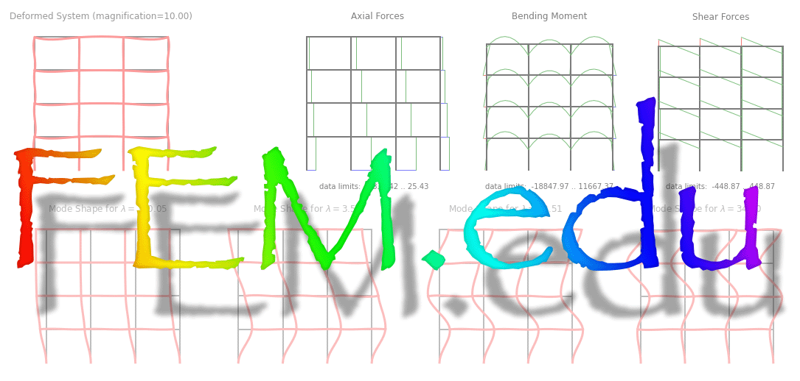

Version 1.0.1 |
last updated: Apr 12, 2023 |
Welcome to the FEM.edu documentation!
{kind=link}
A finite element framework designed with higher education in mind.
Features
Easy integration with any python environment.
- Linear finite element analysis
Spring models
2D and 3D Truss models
1D beam models (continuous beams)
2D and 3D frame models (\(P{-}\Delta\) and numerically integrated FE)
Plate models (triangles and quadrilaterals)
- Geometrically and physically nonlinear finite element analysis
- Elements
2D and 3D Truss models for finite deformation
1D beam models (continuous beams)
2D and 3D frame models (\(P{-}\Delta\) and numerically integrated FE)
Plate models (triangles and quadrilaterals)
Continuum models
- Materials
Fiber-materials for metals
Section-models for beams
Section-models for plates
\(J_2\)-plasticity with hardening for plane stress, plane strain, and 3D
- Solvers
Newton-Raphson solver (load stepping)
Displacement control (with arbitrary load pattern)
Arc-length control (with arbitrary load pattern)
- Meshing features
Curve, Patch, TrianglePatch, Solid meshers
- Basic plot features for built-in and User-defined elements
Deformation plot
Beam diagrams (moment, shear, axial force; for beams and frames)
Time history plots
- Easy integration of
User defined elements (Element objects)
User defined materials (Material objects)
User defined solution algorithms (Solver objects)
User defined report generators (Reporter objects)
Revision Log
fixes for release 1.0.0 by Peter Mackenzie-Helnwein at 2023-04-12 17:17:40
jump to version 1.0.0 by Peter Mackenzie-Helnwein at 2023-04-12 12:55:07
getting ready for release by Peter Mackenzie-Helnwein at 2023-04-12 12:40:10